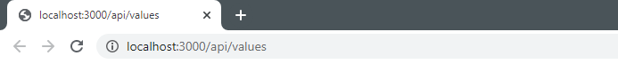
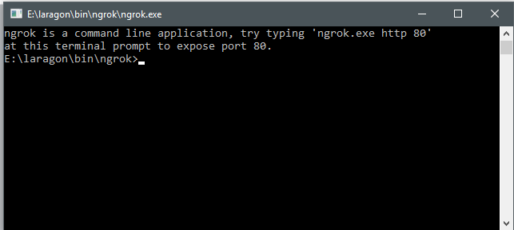
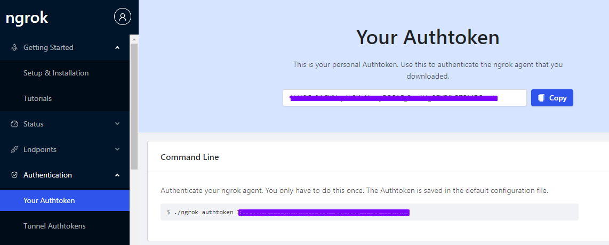
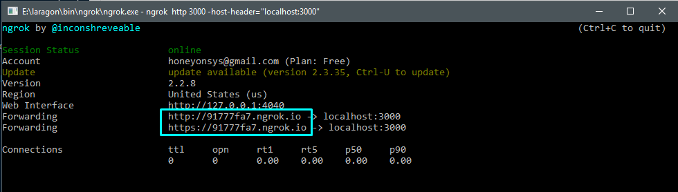

As a developer many times i need to expose my localhost application to the web for demo purposes or to test my web application api with a webhook which only post to a live url. Either you should have a hosting for it or if you don't have much money spent on hosting you can still make you localhost applicaiton live with an application ngrok
Ngrok is a multiplatform tunnelling, reverse proxy software that establishes secure tunnels from a public endpoint such as internet to a locally running network service while capturing all traffic for detailed inspection and replay.
In my case i am gonna show you how you can make your visual studio web application live with ngrok
First of all you need your application run in the localhost. I believe that you already have your application which is running the localhost. I am just showing you a basic application which is running on my localhost:3000 and supports a post request from user and we will make that live with ngrok so that we can post the data to live url generated with ngrok and get response from it.
So my localhost applicaiton is running

We need ngrok to be download first, so we will go to https://ngrok.com/download and download the latest version of the ngrok application.
once you downloaded the ngrok exe simple run it by double click on it. its a portable command running application which will launch immediately and you will see the command prompt like below

Now there will be simple command to make you localhost application live to web. which will like this
ngrok http 3000Note: 3000 here is my port number. In your case it could be different.
It is possible if you are using the ngrok for the first time it could prompt you for authrozie to use ngrok with api key. In that case you should create a new apikey by login into the ngrok and when you reach to your admin dashboard then redirect to Authentication -> Your Auth Token, in the right area you should see your authtoken in the textbox copy it and do the following command

ngrok authtoken YOUR AUTH TOKENand then again use the
ngrok http 3000Sometimes port are very different and big like in 5 digits (44533, 55677, 34343 etc). It might give you trouble. so for that you can use the following command to make your application live
ngrok http 3000 -host-header="localhost:3000"If the above query runs successfully you will see the terminal like below. You can copy any of the highlited link and visit into the web, it will treat as same as trated in localhost
